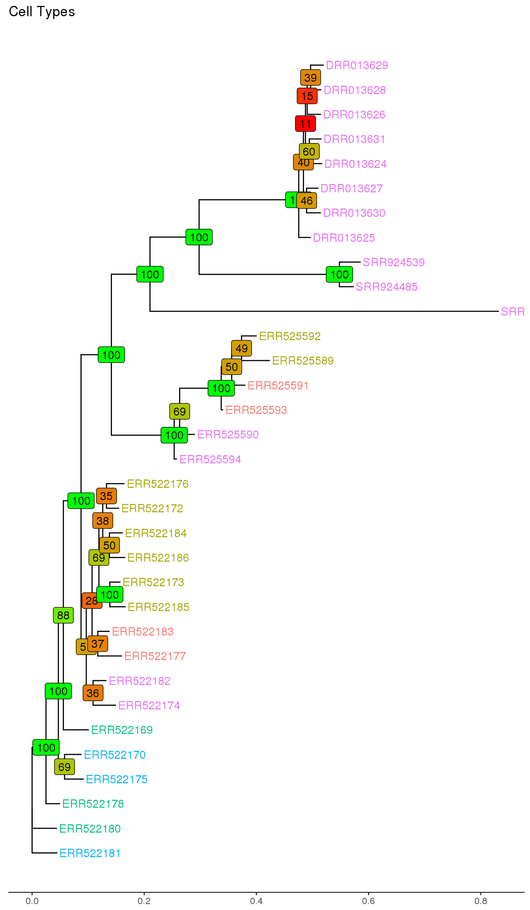
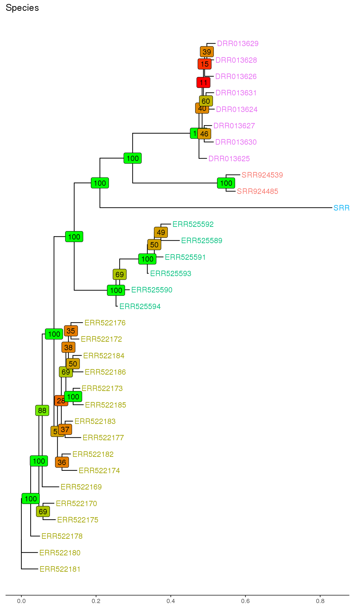
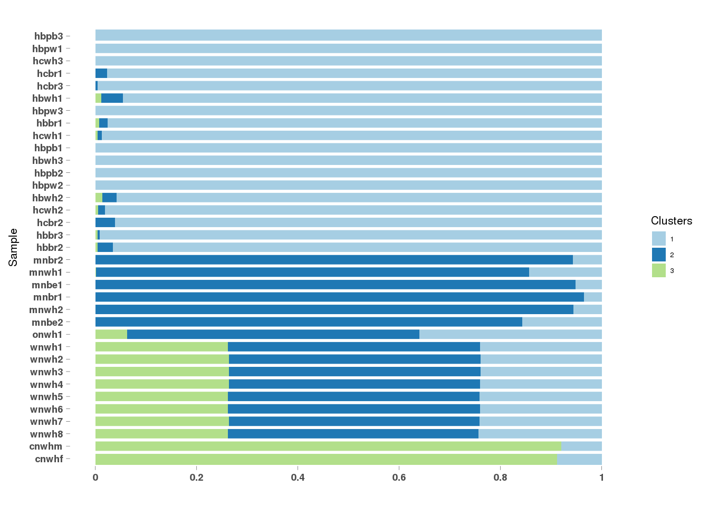
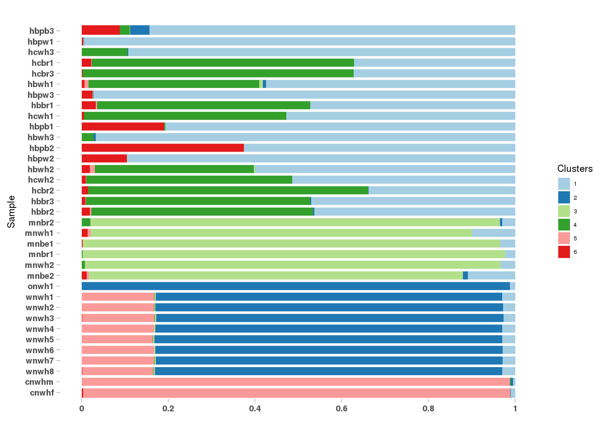
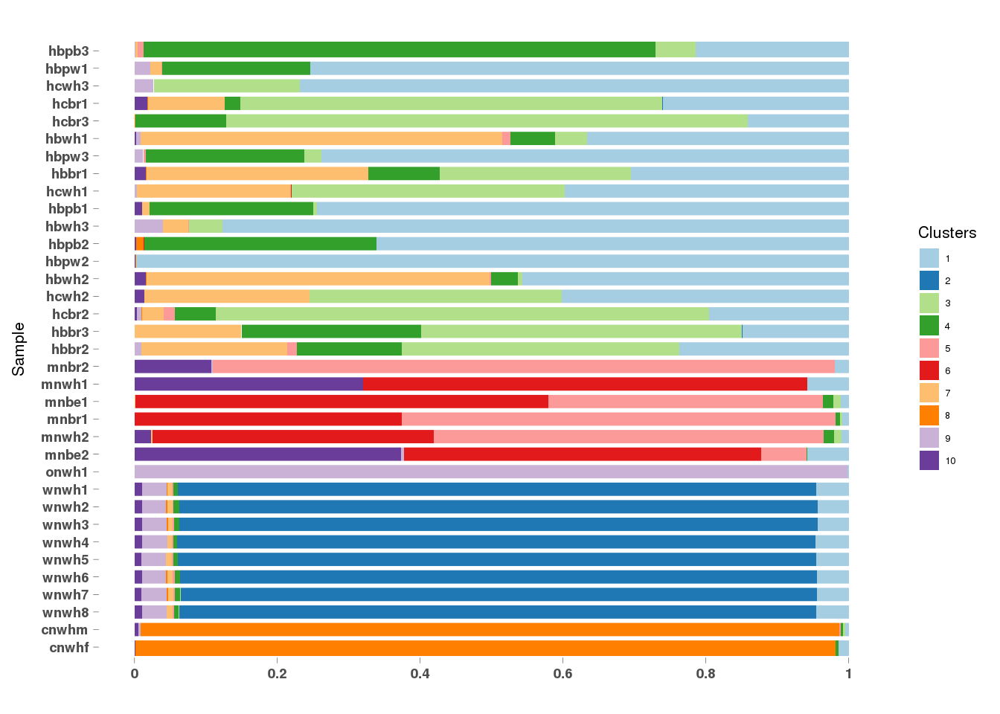

Last updated: 2017-03-13
Code version: e75cac0
The molecular mechanisms of cell-type evolution remain unclear. The sister cell-type hypothesis assumes that cell-types, much like individual genes, evolve by ‘furcation’ and that the historical events from ancestral to modern cell types can be represented as a tree-like network. REFERENCE However, recent studies have found pervasive concerted evolution in cell-type transcriptomes, which violates the assumption of individuation in generating tree-like representations of cell-type historical contingency. In other words, cell-types likely evolve by combinations of ‘furcation’ and fusion in the form of co-opted gene expression programs from other cell-types within the same organism. Here I look to use a combination of maximum likelihood phylogenetic tree construction along with grade of membership models to infer the evolutionary relationship between brown, beige, and white adipocytes.
RNA-seq data was downloaded from the SRA for adipose tissue samples from Chicken, Opossum, Wallaby, Mouse, and Human species. REFERENCES Reads were psuedoaligned and expression quantified using kallisto. REFERENCE Counts were normalized and quality controlled using DESeq2’s regularized-log normalization. REFERENCE Binary expression matrices were generated using TPMs estimated by kallisto. REFERENCE A TPM greater than or equal to 2 was designated as expressed (1) whereas a TPM less than 2 was designated as not expressed (0).
Maximum-likelihood trees were generated using RAxML REFERENCE and the following command:
raxmlHPC -f a -m BINGAMMA -p 12345 -x 12345 -# 1000 -s expression.phylipGeneral formula for calculating the maximum likelihood of our data give the parameters
Algorithm RAxML uses to search tree space
Rate matrix used by RAxML for binary character state evolution
A grade of membership model was used to quantify the cluster proportions for each sample using different values of \(k\).
CountClust REFERENCE assumes that the RNA-seq counts, \(c_{ng}\), for each sample \(n\) and each gene \(g\) can be modeled as a random draw from a multinomial distribution:
\((c_{n1}, c_{n2}, · · · , c_{nG})\) ∼ \(Multinomial (c_{n+}, p_{n1}, p_{n2}, · · · , p_{nG})\)
Where
\(p_{ng} := \sum_{k=1}^{K} q_{nk} \theta_{kg}\)
and \(\theta_{gk}\) represents the relative expression of gene \(g\) in cluster \(k\) and \(q_{nk}\) the proportion of reads from sample \(n\) coming from cluster \(k\).
How does it fit the data?
The following code was used to generate the results:
library(CountClust)
counts <- readRDS("../data/final_project/counts_matrix.rds")
sampleTable <- readRDS("../data/final_project/sample_table.rds")
orthos <- readRDS("../data/final_project/orthologs.rds")
geneIDs <- rownames(counts)
geneNames <- orthos[orthos$hid %in% geneIDs, ]$hname
for (i in 2:10) {
FitGoM(t(counts), K = i, tol = 0.1, path_rda = paste0("../output/final_project/countclust/clustk",
i, ".rda"))
load(paste0("../output/final_project/countclust/clustk", i, ".rda"))
assign(paste0("omega", i, sep = ""), eval(parse(text = paste0("Topic_clus_list$clust_",
i, "$omega"))))
assign(paste0("theta", i, sep = ""), eval(parse(text = paste0("Topic_clus_list$clust_",
i, "$theta"))))
}
Estimating on a 35 document collection.
Fit and Bayes Factor Estimation for K = 2
log posterior increase: 3808996.8, done.
log BF( 2 ) = 16960723.88
Estimating on a 35 document collection.
Fit and Bayes Factor Estimation for K = 3
log posterior increase: 12781064.5, done.
log BF( 3 ) = 29216702.27
Estimating on a 35 document collection.
Fit and Bayes Factor Estimation for K = 4
log posterior increase: 13649741.7, done.
log BF( 4 ) = 32376879.82
Estimating on a 35 document collection.
Fit and Bayes Factor Estimation for K = 5
log posterior increase: 13111130.1, 145452, done.
log BF( 5 ) = 35706770.16
Estimating on a 35 document collection.
Fit and Bayes Factor Estimation for K = 6
log posterior increase: 12676480.2, 96843.9, done.
log BF( 6 ) = 36537164.59
Estimating on a 35 document collection.
Fit and Bayes Factor Estimation for K = 7
log posterior increase: 12942780.6, 67785.1, done.
log BF( 7 ) = 37460116.37
Estimating on a 35 document collection.
Fit and Bayes Factor Estimation for K = 8
log posterior increase: 13928952.1, 88389.8, done.
log BF( 8 ) = 38141356.62
Estimating on a 35 document collection.
Fit and Bayes Factor Estimation for K = 9
log posterior increase: 9842922.1, 96303.3, done.
log BF( 9 ) = 38381265.67
Estimating on a 35 document collection.
Fit and Bayes Factor Estimation for K = 10
log posterior increase: 12939917.3, 116915.5, done.
log BF( 10 ) = 39863139.93annotation <- data.frame(sample_id = paste0("X", c(1:NROW(omega2))), tissue_label = factor(sampleTable$label,
levels = rev(c(sampleTable$label))))Our data as input for RAxML is a phylip formatted “alignment” file:
33 4530
ERR522169 011101111110111111...
ERR522170 011001111110011111...
ERR522172 011001111111011111...
ERR522173 011101111111011111...
.
.
.Our data as input for CountClust is a gene by sample count matrix:
| ERR522169 | ERR522170 | ERR522171 | ERR522172 | |
|---|---|---|---|---|
| ENSG00000000005 | 0 | 0 | 0 | 36 |
| ENSG00000000460 | 517 | 584 | 167 | 144 |
| ENSG00000001461 | 1164 | 893 | 400 | 407 |
| ENSG00000001561 | 389 | 18 | 160 | 106 |
| ENSG00000002746 | 57 | 50 | 17 | 36 |
| ENSG00000002834 | 7884 | 6185 | 3484 | 2489 |



| V1 | V2 | V3 | V4 | V5 | V6 | V7 | V8 | V9 | V10 | V11 | V12 | |
|---|---|---|---|---|---|---|---|---|---|---|---|---|
| 1 | FN1 | THBS1 | SPOCK1 | RCN1 | TIMP3 | PAPPA | STC1 | CLDN11 | PCDH9 | APOD | RPS15A | ABI3BP |
| 2 | LARS2 | ATP5B | FASN | PRDM6 | NABP1 | ACSL1 | CAT | CTSB | C11orf54 | ACOX1 | PNPLA2 | ACO2 |
| 3 | PLIN1 | PPL | HSPA2 | PTRF | GPC1 | NFASC | TPPP3 | CHAD | TIE1 | SSTR2 | PLXND1 | GCGR |

| V1 | V2 | V3 | V4 | V5 | V6 | V7 | V8 | V9 | V10 | V11 | V12 | |
|---|---|---|---|---|---|---|---|---|---|---|---|---|
| 1 | FN1 | RPS15A | DCBLD2 | PAPPA | THBS1 | RPS23 | RPS13 | INHBA | ANXA2 | RPS20 | HAS2 | ABI3BP |
| 2 | PRDM6 | DPT | MYCBP2 | SORL1 | ADAMTS9 | CIDEA | COL14A1 | DCN | MMP7 | TSPAN9 | FBN1 | HMCN1 |
| 3 | LARS2 | FASN | ATP5B | NABP1 | CTSB | C11orf54 | ACOX1 | ACO2 | PNPLA2 | PANK3 | LPGAT1 | TSPAN12 |
| 4 | APOD | PLIN2 | PDK4 | CRYAB | FKBP5 | PTP4A1 | GPAM | ATP2A2 | SLC2A5 | UAP1 | TIMP3 | PPARGC1A |
| 5 | PLIN1 | PTRF | HSPA2 | TPPP3 | PPL | CHAD | GPC1 | NFASC | SSTR2 | TIE1 | RBM5 | RGS5 |
| 6 | COL1A1 | IGFBP3 | TPM1 | TNC | SULF1 | SMAD3 | SPOCK1 | SCUBE3 | LOXL4 | LTBP1 | DDOST | TPM2 |

| V1 | V2 | V3 | V4 | V5 | V6 | V7 | V8 | V9 | V10 | V11 | V12 | |
|---|---|---|---|---|---|---|---|---|---|---|---|---|
| 1 | FN1 | CSF3 | RPS15A | THBS1 | TGFBI | PAPPA | VIM | ABI3BP | HAS2 | RPS16 | GREM1 | P4HA2 |
| 2 | PRDM6 | ADAMTS9 | SPTBN1 | CIDEA | TSPAN9 | MYCBP2 | SORL1 | SPTAN1 | EEF1A2 | HMCN1 | CDH5 | RIC8B |
| 3 | PDK4 | PTP4A1 | STC1 | ATP2A2 | UAP1 | ETF1 | PPARGC1A | PLIN2 | DKC1 | EIF2S1 | RABGGTB | NOP56 |
| 4 | IGFBP3 | ANXA2 | TPM1 | CITED2 | RPN2 | SMAD3 | PLS3 | TMEM200A | TNFRSF11B | WDR1 | CYR61 | CEMIP |
| 5 | ATP5B | C11orf54 | ACO2 | ACSL1 | ACOX1 | HADHA | ETFDH | OGDH | DLAT | PRKAR2B | TMEM45B | TMED5 |
| 6 | LARS2 | SLC27A1 | PRRX1 | POSTN | ULK1 | RBP4 | GREB1 | PFKFB3 | CCND2 | CDC42 | NABP1 | TTYH2 |
| 7 | PTX3 | MME | GPAM | SLC2A5 | SERPINF1 | C1orf198 | NID2 | MGST3 | RCN1 | CYB5A | GLDN | EGFL6 |
| 8 | PLIN1 | HSPA2 | NFASC | GPC1 | PPL | CHAD | PTRF | SSTR2 | NLGN3 | TPPP3 | GCGR | RBM5 |
| 9 | MMP7 | NUP37 | ADD1 | ZAR1L | PPP2R5E | LRRC14B | FYB | ARL14EP | RGS18 | MYOM2 | DNAJC27 | SLC22A3 |
| 10 | CTSB | FASN | GAS6 | SPON1 | COL5A1 | NFIA | SNED1 | COL4A2 | LPGAT1 | ADAMTS5 | CAV1 | PCOLCE |
How can we combine evolutionary inference with grade of membership models to make evolutionary statements about the different clusters found by CountClust?
R version 3.3.2 (2016-10-31)
Platform: x86_64-pc-linux-gnu (64-bit)
Running under: Gentoo/Linux
locale:
[1] LC_CTYPE=en_US.UTF-8 LC_NUMERIC=C
[3] LC_TIME=en_US.UTF-8 LC_COLLATE=en_US.UTF-8
[5] LC_MONETARY=en_US.UTF-8 LC_MESSAGES=en_US.UTF-8
[7] LC_PAPER=en_US.UTF-8 LC_NAME=C
[9] LC_ADDRESS=C LC_TELEPHONE=C
[11] LC_MEASUREMENT=en_US.UTF-8 LC_IDENTIFICATION=C
attached base packages:
[1] stats graphics grDevices utils datasets methods base
other attached packages:
[1] ggtree_1.6.10 CountClust_0.1.2 ggplot2_2.2.1
loaded via a namespace (and not attached):
[1] Rcpp_0.12.9 RColorBrewer_1.1-2 highr_0.6
[4] formatR_1.4 git2r_0.18.0 plyr_1.8.4
[7] workflowr_0.3.0 tools_3.3.2 digest_0.6.12
[10] jsonlite_1.3 evaluate_0.10 tibble_1.2
[13] gtable_0.2.0 nlme_3.1-128 lattice_0.20-34
[16] mgcv_1.8-15 Matrix_1.2-7.1 yaml_2.1.14
[19] parallel_3.3.2 cluster_2.0.5 stringr_1.2.0
[22] knitr_1.15.1 gtools_3.5.0 stats4_3.3.2
[25] rprojroot_1.2 grid_3.3.2 nnet_7.3-12
[28] cowplot_0.7.0 maptpx_1.9-2 flexmix_2.3-13
[31] rmarkdown_1.3 limma_3.30.12 tidyr_0.6.1
[34] reshape2_1.4.2 magrittr_1.5 MASS_7.3-45
[37] backports_1.0.5 scales_0.4.1 htmltools_0.3.5
[40] modeltools_0.2-21 assertthat_0.1 permute_0.9-4
[43] picante_1.6-2 colorspace_1.3-2 ape_4.1
[46] labeling_0.3 stringi_1.1.2 lazyeval_0.2.0
[49] munsell_0.4.3 slam_0.1-40 vegan_2.4-2 This site was created with R Markdown